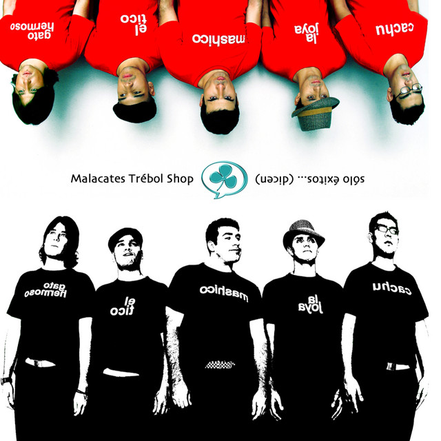
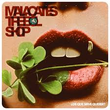

Compararemos los dos mejores álbumes de Malacates Trebol Shop que son "Sólo éxitos...(dicen)" y "¿De que sirve querer?". Ambos álbumes tienen un estilo único y han sido muy populares entre los fans de la banda. Luego podrás elegir entre tu álbum favorito y las canciones mas te gussten de esta bella banda.
Tabla comparativa entre el álbum "Sólo éxitos...(dicen)" y el álbum "¿De que sirve querer?"
Álbum
Año de lanzamiento
Canciones destacadas
Popularidad
Número de reproducciones
Sólo éxitos...(dicen)
2005
"Ni un Centavo(Versión 2005)", "Déjame llegar", "Tómanme"
Muy popular entre los fans de la banda, especialmente por su estilo más rockero y enérgico.
Aproximadamente 48 millones de reproducciones mensuales
¿De que sirve querer?
2009
"Todo se pagará", "¿De que sirve querer?", "Amor de tres"
También muy popular, pero con un estilo más suave y melódico que ha atraído a un público más amplio.
Aproximadamente 32 millones de reproducciones mensuales
Elige tu álbum favorito
¿Cuál de estos dos álbumes de Malacates Trebol Shop prefieres? Puedes seleccionar tu favorito a continuación:


Elige tus canciones favoritas
Además de elegir tu álbum favorito, también puedes seleccionar tus canciones favoritas de Malacates Trebol Shop:
Preguntas extras
¿Cuál es tu canción favorita de Malacates Trebol Shop?
¿Cuál es tu álbum favorito de Malacates Trebol Shop?
¡Gracias por responder los cuestionarios y por tomarte el tiempo de visualizar mi página sobre Malacates Trebol Shop!